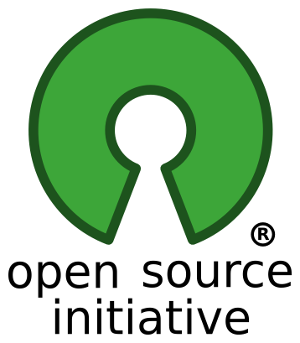

Analisar modelo de negocios
O modelo de negocios com programas de codigo aberto desperta duvidas por ser diferente do modelo de vendas convencional. Muitos consumidores de software de PC estao habituados com a ideia de comprar uma copia fisica ou chave para usar um programa na sua totalidade e com direitos legais sobre a cópia. Comprar uma licenca de uso de programas em codigo fechado (conhecido como codigo proprietario), o utilizador tem permissao de instalar uma copia do programa mas nao tem acesso ao seu codigo fonte. O fabricante toma a seguinte atitude para inserir mecanismos de proteção contra copias ilegais e esconder até o funcionamento interno do programa. Este procedimento pode nao fazer grande diferenca para o comum dos mortais. Mas para empresas de tecnologia, profissionais da computacao ou estudantes, pode trazer grandes prejuızos. Defensores do codigo aberto acreditam ser fundamental o acesso ao codigo fonte do programa que usa. Tal como no conhecimento cientıfico, acreditam que o avanco tecnologico é maior quando especialistas analisam e confrontam diferentes metodos e abordagens sobre um problema. Alem da disponibilidade do codigo fonte, tambem são criadas normas abertas com padroes para garantir que qualquer interessado com capacidade possa acompanhar, interferir e ate criar suas proprias solucoes.
Software Livre vs Codigo Aberto
Atenção que o codigo aberto é gratuito mas nem todo programa gratuito (FREEWARE) é de codigo aberto.
Software Livre e Codigo Aberto sao termos para descrever programas onde o codigo fonte pode ser estudado, alterado e partilhado sem restricoes. Em ingles, a ambiguidade da palavra "Free" pode levar a intrepretar tanto como livre quanto gratuito – criando a ilusao de que trata-se simplesmente de programas que podem ser obtidos sem custo. Apesar de muitas vezes ser aplicavel, essa realidade esconde os aspectos principais do codigo aberto. A expressao codigo aberto transmite a ideia do acesso ao funcionamento interno, mas nao muito sobre sua modifica accao e compartilhamento.
Existem outros termos que se pretendem mais tecnicos. Da uniao do termo software livre & codigo aberto surge:
- FOSS: Free Open Source Software (Programa Livre de Codigo Aberto).
Para reduzir ainda mais a ambiguidade da palavra "free":
- FLOSS: Free/Libre Open Source Software.
Este ultimo é mais utilizado quando se quer ressaltar a gratuidade e a liberdade de estudar, modificar e compartilhar. Ao longo de todo esse texto é utilizado o termo codigo aberto para designar FOSS e FLOSS.
Modelos de Negocio
No codigo aberto nao existe necessidade da venda de copias dos programas binários, a empresa ou o profissional sao remunerados de outras maneiras:
-
Financiamento externo: Grandes empresas financiam fundacoes destinadas a desenvolver e produzir projetos de codigo aberto empresas como Google e IBM dependem de programas de codigo aberto e por isso os patrocinam.
-
Serviços: Profissionais e empresas costumam vender serviços associados ao codigo aberto, suporte tecnico, formação até consultorias. Pequenas empresas podem oferecer os mesmos servicos de grandes multinacionais, pois os programas são os mesmo.
-
Assinaturas: Enquanto que o software é oferecido sem custo, é possıvel cobrar pela hospedagem e manutencao no servidor. Por vezes é mais conveniente do que contratar um servidor fisico formatado e instalar o programa por conta propria.
Licenças GNU
GNU GPL(GNU General Public License): Esta licenca esta diretamente relacionada ao projeto GNU, mas pode ser aplicada por qualquer projeto de codigo aberto.
A licença GPL foi criada a partir de quatro liberdades base:
- A liberdade de usar o programa para qualquer finalidade.
- A liberdade de modificar o programa para atender suas necessidades.
- A liberdade de compartilhar o programa com outros.
- A liberdade de compartilhar as modificacoes realizadas.
A ultima liberdade esta mais proxima de um dever, o chamado copyleft(possui copyright inverso). No lugar de limitar o uso do codigo fonte, o programador esta obrigado a manter o codigo aberto. Um programador nao pode copiar um codigo fonte na licenca GPL, a menos que esse codigo modificado tambem seja licenciado sob a GPL.
Para a Free Software Foundation, essa caracterıstica define se um programa de codigo aberto pode ser chamado de software livre.
Free Software Foundation

O projeto GNU e seus subprojetos são mantidos pela Free Software Foundation, ou simplesmente FSF. É uma entidade sem fins lucrativos que promove a liberdade dos utilizadores de computador e a defesa dos direitos no software livre.
outros tipos de licencas livres:
-
GNU Lesser General Public License (LGPL): Uma versao menos rigorosa que a GPL no que diz respeito ao copyleft. E indicada para bibliotecas – componentes de programas – abertas que pretendem substituir versoes proprietarias equivalentes. Um programa proprietario pode utilizar uma biblioteca LGPL sem necessidade de tornar-se codigo aberto ou livre
-
GNU Affero General Public License (AGPL): Não importa se o utilizador executa o programa por conta própria ou se usa um serviço de hospedagem oferecido por outra pessoa, se puderem efetivamente usar um programa, são consideradas usuários e, como tal, devem ter acesso ao código-fonte.
-
GNU Free Documentation License (FDL): Destinada para conteudos de manuais e livros. Assim como no caso dos programas, essa licenca garante a copia, redistribuicao com ou sem modificacoes, comercialmente ou nao.
Enquanto a FSF é menos flexıvel quanto ao conceito de codigo livre e publica sua propria licenca, a Open Source Initiative procura difundir todas as modalidades de programas nao proprietarios.
saber mais sobre os varios tipos de Licenças GNU
Open Source Initiative

Open Source Initiative(OSI) têm a principal finalidade de publicar a definicao formal do que e codigo aberto. Resumidamente, codigo aberto é o codigo fonte que pode ser utilizado, modificado e partilhado sem restriçoes.
A OSI nao publica licencas, mas avalia licencas disponıveis e as aprova ou desaprova como licencas de codigo aberto. Segundo a OSI, a propria GPL é uma licenca genuinamente de codigo aberto.
Para uma licenca ser aprovada pela OSI, ela deve atender aos criterios especıficos da definicao de codigo aberto mantida pela OSI:
-
Distribuição Livre: A licenca nao podera restringir nenhuma das partes de vender ou dar o programa como um componente de uma seleçao de programas de diferentes fontes. A licenca nao pode exigir pagamento de royalty ou outra taxa pela venda.
-
Codigo Fonte: O programa precisa incluir o codigo fonte e permitir a distribuiçao tanto em codigo fonte quanto em formato compilado. Quando o codigo fonte nao acompanhar o produto, sera necessario existirem meios suficientemente divulgados para obter o codigo fonte, preferivelmente a cobrar nao mais que seu custo de reproducao ou copiando via Internet sem custo adicional.
-
trabalhos Derivados
A licenca deve permitir modificacoes e trabalhos derivados, e precisa permitir que estes sejam distribuıdos sob os mesmos termos da licenca original
- Integridade do Codigo Fonte do Autor
A licenca pode impedir a distribuiçao do codigo fonte modificado apenas se permitir a distribuicao de emendas (patch files) com a finalidade de modificar o programa durante a compilacao. A licenca deve permitir explicitamente a distribuicao de programas compilados a partir do codigo fonte modificado. A licenca pode exigir que trabalhos derivados tenham um nome ou versao diferentes do original.
- Nenhuma Discriminaçao Contra Pessoas ou Grupos
A licenca nao pode discriminar nenhuma pessoa ou grupo de pessoas
- Nenhuma Discriminaçao Contra Campos de Atuaçao
A licença nao pode impedir o uso do programa em determinados campos de atuaçao. Por exemplo, ela nao pode impedir que o programa seja utilizado em um negocio ou em pesquisas geneticas
- Distribuiçao da Licença
As regras anexadas ao programa se aplicam a quem o programa for redistribuido, sem necessidade de utilizar uma licença adicional para essas partes.
-
Licença nao Pode Ser Especıfica a um Produto: As regras atribuıdas ao programa nao podem depender de seu vınculo a uma distribuiçao em particular. Se o programa ́e extraıdo da distribuiçao e utilizado ou distribuıdo dentro dos termos de sua licenca, todas as partes a quem o programa e redistribuıdo possuirao os mesmo direitos da licenca original do programa.
-
A Licenca Nao Pode Restringir Outro Programa: A licenca nao pode impor restricoes a outros programas distribuídos com o programa licenciado. Por exemplo, a licenca nao pode exigir que todos os programas distribuıdos na mesma mıdia sejam de codigo aberto
-
A Licenca Precisa Ser Tecnologicamente Neutra: Nenhuma disposicao da licenca pode estar associado a uma tecnologia em particular ou modalidade de interface
Outras licencas aprovadas
- Apache License 2.0
- BSD 3-Clause New ou Revised license
- BSD 2-Clause Simplified ou FreeBSD license
- MIT license
- Mozilla Public License 2.0
- Common Development and Distribution License
- Eclipse Public License
Creative commons
São várias licenças tipo copyright que garantem certos "direitos básicos", como o direito de distribuir obras com direitos autorais sem modificações, a custo zero.
sites relacionados com CC:
Exemplos de licenças de codigo aberta aplicadas numa situação real
Sun Microsystems foi adquirida por outra empresa chamada ORACLE, todos os produtos da Sun passaram para a ORACLE. A Sun desenvolvia diversos projetos: linguagem Java, S.O. Solaris, S.O. OpenSolaris, OpenOffice.org, NetBeans, entre outras coisas. Infelizmente a ORACLE mostrou que não era muito amiga do software livre e aconteceu o seguinte depois da compra:
-
Queria descontinuar o projecto OpenSolaris. A comunidade criou como resposta o OpenIndiana, com a base já feita do OpenSolaris.
-
Continuar com software de escritorio mas manter apenas uma versão actualizada a pagar o StarOffice. E que actualizacoes de codigo seriam muito poucas para com a versao open-source chamada de OpenOffice. Entao ex-funcionarios da sun microsystems com o código fonte do OpenOffice modificam e criam uma versao melhorada chamda LibreOffice não querem que o OpenOffice.org tenha um fim. É uma garantia de que o projeto não morre e continua com licensa de codigo aberto.